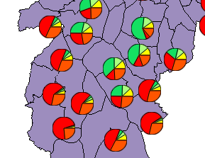

Pie/Bar Chart
This interface allows the
user to generate a pie or a bar chart over some attributes. A data analysis that can be done with these charts is
the comparison between two or more compatible attributes.
For example, using data from some districts, it is possible to make a comparison of the
income distribution using the attributes that indicate the salary
ranges based on the minimum salary. The salaries ranges varies from 2-5, 5-10,10-15,15-20, >20 as showed below.

It is
accessible through:
Layer
Explorer > Right Click over a
Layer-name > Pie/Bar
Chart...
- Define the visual parameters of the chart
- Type: choose the chart type (bar or pie).
- Size: choose the pie/bar size to be drawn on the map.
- Contour Color: Sets the contour line color of the chart
- Contour Width: Sets the contour line width of the chart.
- Define the properties used to generate the chart.
- Choose the Attributes from the list of all attributes presented.
- Click on
 to add the attribute with an automatic color associated.
to add the attribute with an automatic color associated.
- Optionally, it is possible to change the color, by doing:
- click over the Color and choose a new one.
- Optionally, it is possible to change the list of attributes selected, by doing:
- Click over the Attribute name and click on (-) to remove this attribute.
- Press OK to generate the chart or Cancel to close the dialog.